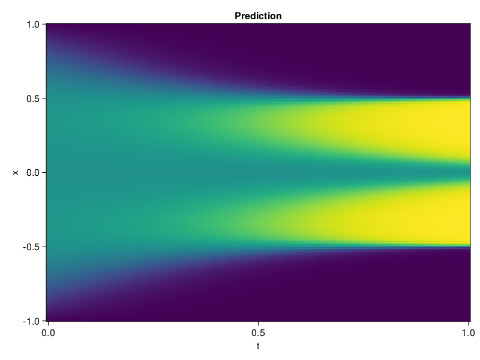

Allen-Cahn Equation with Sequential Training
In this tutorial we are going to solve the Allen-Cahn equation with periodic boundary condition from $t=0$ to $t=1$. The traning process is split into four stages, namely $t\in [0,0.25]$, $t\in [0.0,0.5]$, $t\in [0.0,0.75]$ and $t\in [0.0, 1.0]$.
using ModelingToolkit, IntervalSets
using Sophon
using Optimization, OptimizationOptimJL
@parameters t, x
@variables u(..)
Dₓ = Differential(x)
Dₓ² = Differential(x)^2
Dₜ = Differential(t)
eq = Dₜ(u(x, t)) - 0.0001 * Dₓ²(u(x, t)) + 5 * u(x,t) * (abs2(u(x,t)) - 1.0) ~ 0.0
domain = [x ∈ -1.0..1.0, t ∈ 0.0..0.25]
bcs = [u(x,0) ~ x^2 * cospi(x),
u(-1,t) ~ u(1,t)]
@named allen = PDESystem(eq, bcs, domain, [x, t], [u(x, t)])\[ \begin{align} - 0.0001 \frac{\mathrm{d}^{2}}{\mathrm{d}x^{2}} u\left( x, t \right) + 5 \left( -1.0 + \left|u\left( x, t \right)\right|^{2} \right) u\left( x, t \right) + \frac{\mathrm{d}}{\mathrm{d}t} u\left( x, t \right) =& 0.0 \end{align} \]
Then we define the neural net, the sampler, and the training strategy.
chain = FullyConnected(2, 1, tanh; hidden_dims=16, num_layers=4)
pinn = PINN(chain)
sampler = QuasiRandomSampler(500, (300, 100))
strategy = NonAdaptiveTraining(1, (50, 1))
prob = Sophon.discretize(allen, pinn, sampler, strategy)OptimizationProblem. In-place: true
u0: ComponentVector{Float64}(layer_1 = (weight = [1.3816953897476196 -0.19849950075149536; 0.7472974061965942 -0.4477340877056122; … ; 0.5639927387237549 0.7301629781723022; -1.661685585975647 0.9734307527542114], bias = [0.0; 0.0; … ; 0.0; 0.0;;]), layer_2 = (weight = [0.41009920835494995 0.23553036153316498 … -0.2123529464006424 -0.33498916029930115; -0.10844052582979202 -0.587652862071991 … 0.469139039516449 -0.3180069029331207; … ; -0.2785564661026001 0.48500725626945496 … -0.4715672731399536 -0.4811215400695801; 0.19113120436668396 0.3734353482723236 … 0.17010079324245453 -0.7045511603355408], bias = [0.0; 0.0; … ; 0.0; 0.0;;]), layer_3 = (weight = [-0.17937520146369934 0.1981508880853653 … 0.6752601861953735 0.5233052372932434; 0.3894898593425751 -0.4828586280345917 … 0.3366478681564331 -0.23378099501132965; … ; 0.08687001466751099 0.4954996407032013 … -0.3480297029018402 -0.21060305833816528; -0.212979257106781 0.6241563558578491 … -0.13016822934150696 -0.0729074627161026], bias = [0.0; 0.0; … ; 0.0; 0.0;;]), layer_4 = (weight = [0.36290159821510315 -0.5132027864456177 … -0.18036353588104248 -0.04048024117946625; -0.2584378123283386 0.4963696599006653 … -0.40469324588775635 0.6576902270317078; … ; 0.3686804473400116 -0.26020723581314087 … 0.27954626083374023 0.5871621370315552; 0.5175312161445618 0.4473589360713959 … -0.09906098991632462 0.35055413842201233], bias = [0.0; 0.0; … ; 0.0; 0.0;;]), layer_5 = (weight = [-0.17885427176952362 -0.1484203189611435 … 0.5681910514831543 0.6599819660186768], bias = [0.0;;]))We solve the equation sequentially in time.
function train(allen, prob, sampler, strategy)
bfgs = BFGS()
res = Optimization.solve(prob, bfgs; maxiters=2000)
for tmax in [0.5, 0.75, 1.0]
allen.domain[2] = t ∈ 0.0..tmax
data = Sophon.sample(allen, sampler, strategy)
prob = remake(prob; u0=res.u, p=data)
res = Optimization.solve(prob, bfgs; maxiters=2000)
end
return res
end
res = train(allen, prob, sampler, strategy)u: ComponentVector{Float64}(layer_1 = (weight = [1.6464366050055408 0.6555029188725252; 1.3220842225523726 -0.14631325041032392; … ; 0.4496962836092458 0.6795711626987834; -1.7713642356877535 0.8863471128811079], bias = [-1.0293485531938373; -0.19383021843211315; … ; 0.7737229511073884; -1.2868706292279926;;]), layer_2 = (weight = [0.1394907980118291 0.12891659343851244 … -0.22779359510795405 -0.10057068621889162; -0.9797760701190843 -0.8764463932830725 … 0.17339046247929582 -0.5979188705751047; … ; -0.11765201783702538 0.6623362255204309 … -0.038597524497825164 -0.6913044770698012; 0.8134057274929234 0.7099163673713416 … 0.2336289962932274 -1.386914738063466], bias = [-0.7195906501465072; 0.32709495984225634; … ; 0.17192053212023575; -0.316960000789719;;]), layer_3 = (weight = [-0.1081533537345197 0.46038121108367164 … 0.46096561799421787 0.29936001069967627; 0.36068023150135753 -0.3711603275806081 … 0.2658261149873343 -1.4486311059834893; … ; 0.11675636383325033 0.10928596411280563 … -0.11515511812063227 -0.31314890999054423; -0.4583123966605489 0.7428128667925727 … 0.011773605903646794 -0.22984732558618376], bias = [-0.1679306392000633; -0.08234949484123397; … ; 0.18500601497225064; 0.20213536576582358;;]), layer_4 = (weight = [0.30603427941767297 -0.7246217204014518 … 0.01333086842765708 0.019496266530952912; -0.14853284501156305 0.6909677509498454 … -0.41789450335539874 0.5507374060583204; … ; 0.012137727812419633 0.08477861846448738 … 0.46461567210569227 0.1875740243033162; 0.3706252723003827 0.5315443544425594 … -0.1433060423892843 0.15713882075889657], bias = [-0.01669759546442216; -0.04680028251828221; … ; -0.12042365667927439; -0.12728513741053246;;]), layer_5 = (weight = [0.003008373490603627 -0.5559144980782819 … 0.6675292054308501 0.4580831234412592], bias = [-0.6552609831392611;;]))Let's plot the result.
using CairoMakie
phi = pinn.phi
xs, ts = [infimum(d.domain):0.01:supremum(d.domain) for d in allen.domain]
axis = (xlabel="t", ylabel="x", title="Prediction")
u_pred = [sum(pinn.phi([x, t], res.u)) for x in xs, t in ts]
fig, ax, hm = heatmap(ts, xs, u_pred', axis=axis)